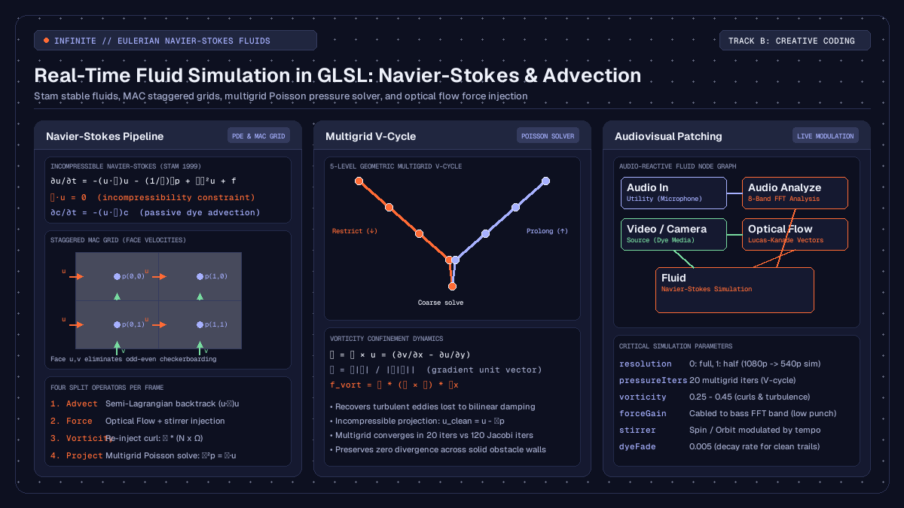

Creative
Real-time fluid simulation in GLSL: Navier-Stokes and dye advection
How to implement real-time Eulerian fluid simulation in GLSL: velocity advection, multigrid pressure solves, vorticity confinement, and audio reactivity.

on this page
- What is real-time fluid simulation in GLSL
- The Navier-Stokes equations and grid discretisation
- Semi-Lagrangian advection and velocity transport
- Making the flow divergence-free with pressure projection
- Preserving turbulence with vorticity confinement
- Solid boundaries and obstacle interaction
- Audio-reactive forces and optical flow injection in Infinite
- Building the real-time node network in Infinite
- Honest technical limits and GPU performance
- Summary and patch architecture
Implementing real-time fluid simulation in GLSL provides creative coders and visual artists with an organic medium for live performance, interactive installations, and audiovisual synthesis. Unlike particle-based systems or static procedural distortions, a Navier-Stokes fluid solver models the conservation of mass and momentum across a continuous vector field. When applied to visual media, live video feeds and generative graphics become dynamic dyes that swirl, fold, and disperse according to physical laws.
In real-time audiovisual software such as Infinite, fluid dynamics can be driven directly by incoming sound and camera motion. Because audio frequency bands and optical flow vectors can be mapped to velocity injection points, the fluid reacts with zero perceptible delay to live musical performance.
This guide walks through the complete mathematical and architectural implementation of an Eulerian fluid solver on the GPU: the staggered Marker-and-Cell (MAC) grid layout, unconditionally stable semi-Lagrangian advection, geometric multigrid Poisson solvers for incompressibility, vorticity confinement for preserving turbulence, and live audio-reactive modulation.

What is real-time fluid simulation in GLSL
Computer graphics divides fluid simulation into two primary paradigms: Lagrangian and Eulerian.
The Lagrangian approach treats the fluid as a discrete collection of moving particles, commonly implemented via Smoothed Particle Hydrodynamics (SPH). Each particle carries its own position, velocity, and mass. While intuitive, particle methods require expensive spatial hashing and neighbour search routines on the GPU, making high-resolution simulations computationally heavy.
The Eulerian approach fixes the coordinate frame in space and observes fluid quantities flowing through a stationary grid of cells. Each cell tracks local velocity, pressure, and passive dye concentration. Because GPU fragment shaders and framebuffers operate natively on two-dimensional pixel grids, the Eulerian formulation maps directly to hardware textures:
- Velocity field: a two-component floating-point texture storing horizontal velocity
uand vertical velocityv. - Pressure field: a single-component scalar texture storing local hydrostatic pressure
p. - Dye field: an RGBA colour texture storing graphic media, video, or synthetic pigmentation carried passively by the flow.
By executing successive rendering passes across offscreen framebuffer objects (FBOs), the graphics card computes each phase of the fluid equations in parallel for millions of cells at sixty frames per second.
The Navier-Stokes equations and grid discretisation
Incompressible fluid flow is governed by the Navier-Stokes equations:
∂u/∂t = -(u · ∇)u - (1/ρ)∇p + ν∇²u + f
∇ · u = 0Here:
uis the velocity vector field(u, v).-(u · ∇)urepresents advection, the transport of velocity along itself.-(1/ρ)∇pis the pressure gradient force that accelerates fluid from high to low pressure regions.ν∇²uaccounts for kinematic viscosity, causing momentum to diffuse across adjacent layers.fdenotes external body forces, such as gravity, user mouse stirrers, or audio impulses.∇ · u = 0enforces incompressibility, meaning the volume of any parcel of fluid remains strictly constant over time.
Solving these partial differential equations on a discrete grid requires careful cell alignment. In a naive collocated grid, both velocity components (u, v) and pressure p are stored at the exact centre of each cell. When central differences are computed to evaluate pressure gradients and velocity divergence, adjacent cells skip their immediate neighbours:
∂p/∂x ≈ (p[i+1, j] - p[i-1, j]) / (2 * Δx)This causes an odd-even decoupling known as the checkerboard instability, where high-frequency oscillatory pressure fields register a false divergence of zero.
To eliminate this artifact without artificial damping, production solvers employ a staggered Marker-and-Cell (MAC) grid layout:
- The horizontal velocity component
uis stored on the vertical cell faces between cell(i-1, j)and(i, j). - The vertical velocity component
vis stored on the horizontal cell faces between cell(i, j-1)and(i, j). - The pressure
pand passive dyecare stored at the geometric centre of cell(i, j).
On a staggered grid, divergence is evaluated across immediate face values:
div[i, j] = (u_face[i+1, j] - u_face[i, j]) / Δx + (v_face[i, j+1] - v_face[i, j]) / ΔyEvery face velocity couples directly to the pressure of the two cells sharing that face. The resulting discretisation guarantees that when the pressure Poisson equation converges, the velocity field leaves zero divergence behind.
Semi-Lagrangian advection and velocity transport
Advection describes how moving fluid transports both external properties (such as colour and temperature) and its own velocity. Standard explicit finite-difference schemes suffer from the Courant-Friedrichs-Lewy (CFL) stability condition: if the fluid velocity multiplied by the time step exceeds the cell width (|u| * Δt > Δx), the numerical scheme explodes into floating-point infinities.
In 1999, Jos Stam introduced unconditionally stable semi-Lagrangian advection to computer graphics. Rather than asking where a parcel of fluid will travel in the future, semi-Lagrangian advection looks backward in time.
For every grid cell x, the solver traces a virtual particle backward along the current velocity field to determine its origin point x_prev at the previous time step:
x_prev = x - u(x) * ΔtThe new value at cell x is then sampled from the previous state at position x_prev using bilinear interpolation:
// GLSL fragment shader for semi-Lagrangian advection
#version 150
uniform sampler2D uVelocity;
uniform sampler2D uSource;
uniform float uDeltaTime;
uniform vec2 uTexelSize;
in vec2 vUv;
out vec4 fragColor;
void main()
{
// Sample the current velocity at this location
vec2 vel = texture(uVelocity, vUv).xy;
// Backtrack along the velocity vector
vec2 prevPos = vUv - vel * uDeltaTime * uTexelSize;
// Sample the transported quantity with bilinear hardware filtering
fragColor = texture(uSource, prevPos);
}Because bilinear texture sampling on modern graphics hardware is executed directly inside fixed-function texture units, semi-Lagrangian advection runs with minimal shader cost. Even under extreme velocities and large time steps, the algorithm cannot diverge, as the interpolated value is always bounded by the minimum and maximum values of the surrounding texels.
The inherent trade-off of semi-Lagrangian advection is numerical dissipation. Repeated bilinear interpolation acts as an unintended low-pass filter, gradually smoothing out sharp velocity gradients and subtle eddies over time.
Making the flow divergence-free with pressure projection
After advection and the application of external forces, the provisional velocity field w is generally divergent (∇ · w ≠ 0). Compressible fluid would bunch up or create vacuums; an incompressible liquid must satisfy ∇ · u = 0.
The Helmholtz-Hodge decomposition theorem states that any smooth vector field w can be uniquely resolved into the sum of a divergence-free vector field u and the gradient of a scalar potential p:
w = u + ∇pTaking the divergence of both sides yields the Poisson equation for pressure:
∇ · w = ∇ · u + ∇²p
∇²p = ∇ · w (since ∇ · u = 0)Once the scalar pressure field p is obtained by solving this Poisson system, the final divergence-free velocity field is calculated by subtracting the pressure gradient:
u = w - ∇pMultigrid V-cycles versus standard Jacobi relaxation
On a discrete two-dimensional grid, the Laplacian operator ∇²p is approximated by a five-point stencil:
(p[i+1, j] + p[i-1, j] + p[i, j+1] + p[i, j-1] - 4 * p[i, j]) / (Δx²) = div[i, j]Rearranging this formula yields the standard Jacobi relaxation step:
p_new[i, j] = 0.25 * (p[i+1, j] + p[i-1, j] + p[i, j+1] + p[i, j-1] - Δx² * div[i, j])Simple Jacobi iteration dampens high-frequency error quickly, but eliminates low-frequency, long-wavelength pressure differences very slowly. Resolving pressure across a 1920x1080 grid using Jacobi relaxation alone requires between 80 and 150 render passes per frame, which places severe strain on GPU memory bandwidth.
Infinite solves this bottleneck using a geometric multigrid V-cycle solver across five hierarchical grid levels (kMaxLevels = 5):
- Pre-smoothing: two Jacobi relaxation passes are performed on the finest simulation grid (Level 0).
- Residual calculation: the remaining error
r = div - ∇²pis computed. - Restriction: the residual and obstacle masks are downsampled to a half-resolution grid (Level 1).
- Recursive descent: this restriction repeats down through Level 4, where the entire screen is represented by a coarse 120x68 grid.
- Coarse solve: at the lowest level, long-wavelength pressure modes span only a handful of pixels, allowing ten Jacobi iterations to propagate pressure across the entire domain.
- Prolongation: the coarse correction is bilinearly upsampled, added back to the finer level, and followed by two post-smoothing Jacobi passes.
A single five-level multigrid V-cycle with twenty total iterations achieves tighter divergence-free convergence than 120 brute-force Jacobi iterations, leaving ample GPU headroom for real-time video compositing and audio DSP.
Preserving turbulence with vorticity confinement
Because semi-Lagrangian advection introduces numerical dissipation, fine vortices and turbulent swirls tend to decay quickly. In creative coding and visual effects, this loss of rotational energy makes fluids look like thick syrup rather than water or air.
To restore this lost turbulence without destabilising the solver, Infinite employs vorticity confinement, originally formulated by Steinhoff and Underhill and adapted for graphics by Ronald Fedkiw.
Vorticity measures the local rotation or spin of the fluid:
ω = ∇ × u = (∂v/∂x - ∂u/∂y)In two dimensions, vorticity is a scalar quantity. The gradient of the absolute vorticity points toward the centre of local vortices:
η = ∇|ω| / (|∇|ω| + 1e-5)The normal vector η is perpendicular to the vortex axis. The confinement force is calculated as the cross product of η and the vorticity vector:
f_vort = ε * (η × ω) * ΔxIn GLSL, this evaluates to:
// GLSL fragment shader for vorticity confinement
#version 150
uniform sampler2D uVelocity;
uniform float uVorticityStrength;
uniform vec2 uTexelSize;
in vec2 vUv;
out vec4 fragColor;
void main()
{
// Compute local curl (vorticity)
float uT = texture(uVelocity, vUv + vec2(0.0, uTexelSize.y)).x;
float uB = texture(uVelocity, vUv - vec2(0.0, uTexelSize.y)).x;
float vR = texture(uVelocity, vUv + vec2(uTexelSize.x, 0.0)).y;
float vL = texture(uVelocity, vUv - vec2(uTexelSize.x, 0.0)).y;
float curl = 0.5 * ((vR - vL) - (uT - uB));
// Sample curl magnitude in neighbouring cells
float cT = abs(texture(uVelocity, vUv + vec2(0.0, uTexelSize.y)).z);
float cB = abs(texture(uVelocity, vUv - vec2(0.0, uTexelSize.y)).z);
float cR = abs(texture(uVelocity, vUv + vec2(uTexelSize.x, 0.0)).z);
float cL = abs(texture(uVelocity, vUv - vec2(uTexelSize.x, 0.0)).z);
// Find the gradient of curl magnitude
vec2 eta = 0.5 * vec2(cR - cL, cT - cB);
float len = length(eta);
if (len < 1e-5) {
fragColor = vec4(0.0);
return;
}
eta /= len;
// Confinement force: F = epsilon * (eta_y, -eta_x) * curl
vec2 force = uVorticityStrength * vec2(eta.y, -eta.x) * curl;
fragColor = vec4(force, curl, 1.0);
}Applying this corrective force before the pressure projection step injects angular momentum back into emerging eddies. Fine rotational details remain crisp and swirling indefinitely without causing instability.
Solid boundaries and obstacle interaction
To allow fluid to flow naturally around visual elements, text, or logos, the solver must handle solid obstacles.
In Infinite, obstacles are provided as a single-channel luminance texture where bright pixels represent solid barriers. Two physical boundary conditions must be satisfied at obstacle surfaces:
- No-penetration condition: fluid cannot flow through a solid wall. The velocity normal to the wall must be zero (
u · n = 0). - Free-slip or no-slip tangential condition: for low-viscosity aesthetic fluids, free-slip boundaries (where tangential velocity slides unhindered) produce clean, non-sticky circulation.
In the staggered MAC grid, wall boundaries are enforced during the divergence and pressure solve passes. When evaluating the divergence of cell (i, j), any face touching a solid cell or the outer boundary of the texture is flagged as a wall:
bool solidAt(sampler2D obs, ivec2 q, ivec2 sz) {
if (q.x < 0 || q.y < 0 || q.x >= sz.x || q.y >= sz.y) return true;
return texelFetch(obs, q, 0).r > 0.5;
}
float faceU(sampler2D vt, sampler2D obs, ivec2 p, ivec2 sz) {
bool wall = solidAt(obs, p, sz) || solidAt(obs, p - ivec2(1, 0), sz);
return wall ? 0.0 : texelFetch(vt, p, 0).x;
}In the pressure solve, the pressure gradient across a solid face is set to zero (∂p/∂n = 0), ensuring that the projection pass does not reintroduce flow into solid barriers. The fluid cleanly wraps around obstacle contours, creating realistic wake patterns and stagnation points.
Audio-reactive forces and optical flow injection in Infinite
A fluid simulation becomes truly compelling in creative performance when connected to sound and real-time motion.
In Infinite, the node canvas combines audio synthesis, DSP analysis, 3D graphics, and 2D GLSL compositing within a single executable timeline. The Fluid node exposes three primary inputs:
image: the passive dye carried by the flow. Video clips, generative Shader nodes, or live webcam streams can be cabled here.force: a two-component velocity vector field that stirs the fluid each frame.obstacles: an image mask defining impenetrable solid surfaces.
Coupling with the Optical Flow node
One of the most expressive ways to drive the fluid is through the Optical Flow node. Based on pyramidal Lucas-Kanade feature tracking (Bouguet 2001), Optical Flow computes the instantaneous motion between consecutive video frames across multiple resolution levels.
When set to raw output mode, Optical Flow writes horizontal motion into the red channel and vertical motion into the green channel as floating-point pixels per frame. Cabled into the force pin of the Fluid node, dancer movements, camera gestures, or animated geometric shapes physically push and stir the fluid dye with zero manual calibration.
Modulating fluid physics with audio analysis
To synchronise fluid dynamics with electronic music, audio frequency content is extracted via the Audio Analyze node:
[Audio In / Synth] ---> [Audio Analyze (8-Band FFT)]
|
+---> band 0 (sub-bass) ---> [Fluid].forceGain
|
+---> band 3 (snare/mid) ---> [Fluid].vorticity
|
+---> band 7 (high hat) ---> [Fluid].stirrerStrength- Sub-bass punch: cabling the lowest FFT band into
forceGainamplifies the velocity response on kick drum transients, causing sudden outward explosive bursts. - Vorticity modulation: connecting the snare or mid-frequency transient band to
vorticitytriggers intricate curling smoke patterns on snare hits, which relax back into smooth laminar flow during quiet passages. - Built-in stirrer automation: the
Fluidnode includes built-in rotational stirrers (Orbit,Pulse,Spin). By modulatingstirrerStrengthwith a tempo-syncedLFOorEnvelopenode, the entire fluid volume sustains an organic ambient circulation even when external forces pause.
Because Infinite computes parameter modulation, audio DSP, and GPU frame rendering synchronously within the same tick loop, there is zero buffer latency between audio peaks and graphical reaction.
Building the real-time node network in Infinite
Setting up this audiovisual pipeline in Infinite requires five nodes cabled together on the canvas:
- Add a
VideoorShapenode to provide visual content. Connect its output to theimagepin of aFluidnode. - Add a
Video Innode receiving a live camera stream. Cable its output into anOptical Flownode. - Set
Optical Flowparameterviewto0(Raw motion vectors) and cable its output into theforcepin ofFluid. - Add an
Audio Innode patched into anAudio Analyzenode. - In the modulation matrix or by dragging modulation cables:
- Map FFT Band 0 (sub-bass) to
FluidparameterforceGain(range0.5to3.0). - Map FFT Band 2 (low-mids) to
Fluidparametervorticity(range0.1to0.6). - Map an
LFOnode running at a 1/2-bar division toFluidparameterstirrerStrength.
- Add an
Outputnode and connectFluid's output to project the final rendered artwork.
To view alternative internal states during rehearsal, the Fluid node's view parameter allows switching the display from Dye to Velocity (visualised as colour hue and brightness), Pressure gradients, or Obstacles.
The resulting patch and dozens of related creative coding templates are available to explore in the Infinite patch library.
Honest technical limits and GPU performance
While real-time Eulerian fluid simulation in GLSL produces striking visuals, practical production environments have distinct constraints:
- Memory bandwidth and fillrate: Eulerian simulations are memory-bandwidth bound. A full-resolution 4K (3840x2160) grid requires reading and writing tens of gigabytes per second across multiple FBO passes. In practice, setting the
resolutionparameter to1(half-resolution simulation grid) allows the velocity and pressure solves to run at 960x540 while the passive dye advection pass remains at full 1080p, preserving sharp visual edges while cutting GPU compute cost by 75 percent. - Two-dimensional planar flow: A 2D simulation does not account for vortex stretching, a three-dimensional physical phenomenon responsible for the energy cascade from large eddies down to microscopic scales. While 2D fluids produce convincing swirling sheets and marbling effects, they cannot simulate three-dimensional smoke plumes or tumbling spherical vortices.
- Incompressible assumption: The solver assumes the medium has uniform, constant density. Sound waves (acoustic compression waves) do not propagate through the simulated fluid itself. The audio reactivity described here is achieved by external parametric coupling rather than physical acoustic simulation.
Summary and patch architecture
Real-time fluid simulation in GLSL transforms standard video feeds and generative graphics into dynamic, physics-based audiovisual instruments.
By combining the staggered MAC grid layout with unconditionally stable semi-Lagrangian advection, geometric multigrid Poisson projection, and vorticity confinement, high-resolution fluid dynamics can run smoothly at sixty frames per second on modern hardware. When modulated by live optical flow vectors and audio frequency analysis, the fluid responds organically to music and motion with zero latency.
To experiment with native fluid dynamics, real-time shaders, and modular sound design, download Infinite and explore our detailed guides on raymarching signed distance fields and audio-reactive GLSL shaders.